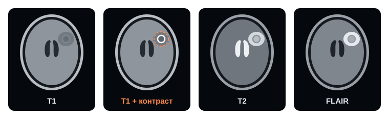

// входные данные
МРТ-последовательности
МРТ не делает «одну фотографию»: аппарат снимает одну и ту же область в разных режимах — последовательностях. Каждая подчёркивает свои ткани, поэтому модель получает на вход сразу несколько.

Сравнение режимов
| Последовательность | Ликвор | Что видно лучше всего | Канал модели* |
|---|---|---|---|
| T1 | тёмный | Анатомия: границы серого и белого вещества | 0 |
| T1 + контраст (T1-CE) | тёмный | Очаги, накопившие контраст, — главный признак метастаза | 1 |
| T2 | яркий | Жидкость и отёк | 2 |
| FLAIR | подавлен | Отёк вокруг очага (перифокальный) | 3 |
* Номер канала — порядок, в котором последовательности подаются на вход нейросети в этом проекте.
Почему именно контраст
Перед съёмкой T1-CE пациенту вводят контрастное вещество на основе гадолиния. В здоровом мозге его не пускает ГЭБ, а в метастазе барьер нарушен — вещество накапливается, и очаг становится ярким. Поэтому T1-CE — главный канал для модели, а остальные режимы помогают отличить очаг от сосуда или артефакта.